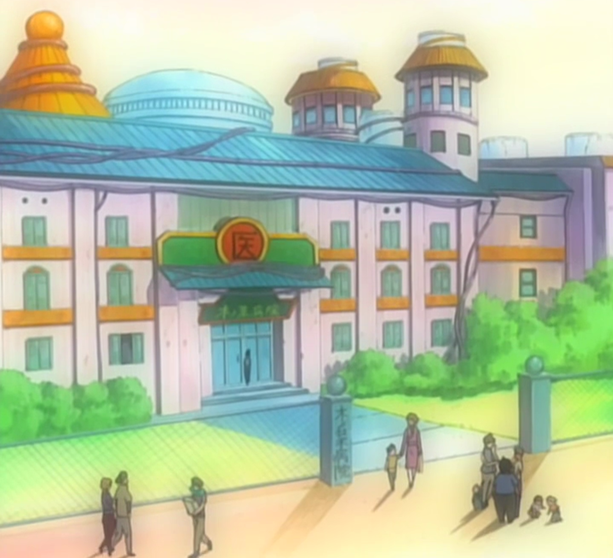
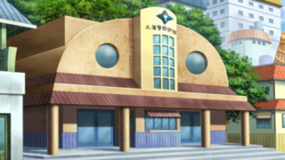
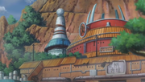
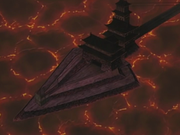

Facilities at KONOHAGAKURE
KONOHA HOSPITAL
The Konoha Hospital (木ノ葉病院,
Konoha Byōin, Literally meaning: Tree Leaf Hospital) serves the medical needs of ninja and other villagers in
Konohagakure. Though the staff is skilled enough to treat most basic ailments, Tsunade and other more advanced
medical-nin must step in to assist with severe injuries. Security for the hospital is apparently lax, as Gaara
is able to get into Rock Lee's room to try and kill him and Naruto managed to sneak out and get ramen. During
Pain's assault on the village, the hospital is overwhelmed by the number of casualties caused by Pain. It was
also destroyed by Pain's Shinra Tensei. The kanji for "medicine" or "healing" (医, ishi) is printed on the front
of the building.
KONOHA MILITARY POLICE FORCE
The Konoha The Konoha Military Police Force is — as the name suggests — the
judicial organisation of Konohagakure. Initially believed to have been founded by the Uchiha, in actuality,
it was founded by the Second Hokage, and was given to the Uchiha as a sign of trust and good faith between the
Senju and themselves. Tobi believed, however, that this was just a method of ostracising them from the
village: having built the prison in the organisation's building which was also located on the Uchiha's compound,
as well as distancing the Uchiha from taking part in the actual governing of Konoha since the police force would
require them to be neutral parties.
A few members, such as Setsuna, also came to believe that this was the true motive behind the organisation, and
tried to rebel as a result. Tobirama, however, dismissed this notion and stated he did this in order to keep
the Uchiha's emotions in check and have the village benefit from their dedication at the same time.
NINJA ACADEMY
The Academy (忍者学校, Akademī,
Literally meaning: Ninja School) is a huge building in Konohagakure located directly at the base of the Hokage
Mountain. It is where prospective ninja are trained and where official ninja receive their assignments. It was
founded by the Second Hokage out of military necessity.Along with being a school, it is also the area where
the Hokage's office is located, which is where missions are dispatched and the day-to-day running of the village
takes place. The Hokage's office is a large, somewhat oval room usually filled with stacks of unfinished
paperwork. Behind the Hokage's desk is a large window through which the Hokage can survey the entire village. On
the desk itself is a stylised kanji for shadow (影, kage) followed by the symbol of the village. Before being
moved, the Mission Assignment Desk where missions are usually dispensed to shinobi was located on the premises.
In the anime, the Jōnin Standby Station is located on the compound.
ICHIRAKU RAMEN
 Ramen Ichiraku (ラーメン一楽, Rāmen Ichiraku, Literally meaning: Ramen is the Best
Pleasure) is a ramen restaurant in Konohagakure.Ramen Ichiraku was founded by Teuchi thirty-one years before the
start of the series. Although it is quite small and has an unassuming appearance, Ramen Ichiraku has always been
popular with Konoha's villagers because of Teuchi's strong commitment to taste, giving the ramen an almost
artistic quality. Like any ramen establishment, Ramen Ichiraku offers various toppings, such as char siu,
boiled eggs, narutomaki, menma and seaweed. In Konoha Hiden, seaweed had been the most popular topping for
several years until, after the Fourth Shinobi World War, it was surpassed by naruto.
Ramen Ichiraku (ラーメン一楽, Rāmen Ichiraku, Literally meaning: Ramen is the Best
Pleasure) is a ramen restaurant in Konohagakure.Ramen Ichiraku was founded by Teuchi thirty-one years before the
start of the series. Although it is quite small and has an unassuming appearance, Ramen Ichiraku has always been
popular with Konoha's villagers because of Teuchi's strong commitment to taste, giving the ramen an almost
artistic quality. Like any ramen establishment, Ramen Ichiraku offers various toppings, such as char siu,
boiled eggs, narutomaki, menma and seaweed. In Konoha Hiden, seaweed had been the most popular topping for
several years until, after the Fourth Shinobi World War, it was surpassed by naruto.
KONOHA STRICT CORRECTIONAL FACILITY
The Konoha Strict Correctional Facility (木ノ葉厳重警戒施設, Konoha Genjū Keikai
Shisetsu), which only appeared in the anime, is a place where shinobi who have committed serious crimes work off
their debt to society.In the past, when inmates were plentiful, the prison used to be under a different name.
However, due to reduced crime rate and intensity, the prison was rebuilt into a smaller facility and renamed.
The prison is a shiro built in the centre of a volcanic area on a triangular island (akin to a kunai shape),
with a long Bascule bridge to connect to the watch-house and the castle. There is a large, exercise area on the
front of the island, where prisoners are to dig through the soils as character building.
>Home Page